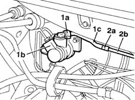

3330C38 FLEXIBLE PIPE - FRONT section - from brake fluid RESERVOIR to (pump) - MASTER CYLINDER R.R. for right hand drive versions
- Path
- Procedures > 33 BRAKING SYSTEM > 3330 HYDRAULIC BRAKING SYSTEM > 3330C brake pump, reservoir and load proportioning valve > 3330C38 FLEXIBLE PIPE - FRONT section - from brake fluid RESERVOIR to (pump) - MASTER CYLINDER R.R. for right hand drive versions
- Kind
- repair procedure (removal / refitting; the operation number is the code)
- Applies to
- all engines; all production periods
- Interactive page
- https://sloeber94.github.io/elrnDB-fMltpl/en/#/2891623
Applies to: engines: 1.9 JTD 8V; all production periods; only with equipment: Right hand drive
 Removing
Removing
 Refitting
Refitting1016A10 sound-proofing cover - r + r
Applies to: all engines; all production periods; only with equipment: Right hand drive
Drain the brake/clutch fluid reservoir using a syringe.
Position a container underneath the vehicle.
1. Open the band (1a) and disconnect the flexible oil supply pipe (1c) from the master cylinder (pump) (1b).
2. Open the band (2a) and remove the flexible pipe disconnecting it from the rigid pipe (2b).

Applies to: all engines; all production periods; only with equipment: Right hand drive
Refitting
RemovingConnect the flexible pipe to the rigid pipe and close the retaining band.
Connect the flexible pipe to the master cylinder and close the retaining band.
Applies to: engines: 1.9 JTD 8V; all production periods; only with equipment: Right hand drive
1008C16 body link bracket - r r
Applies to: all engines; all production periods; only with equipment: Right hand drive